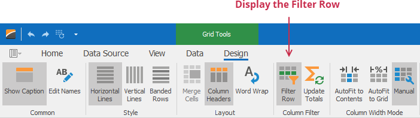
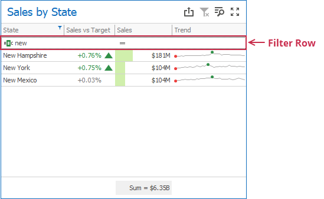
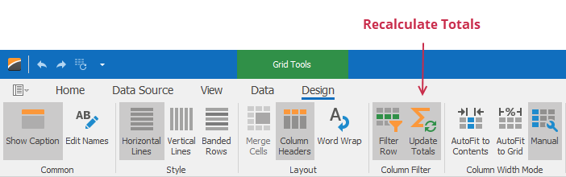
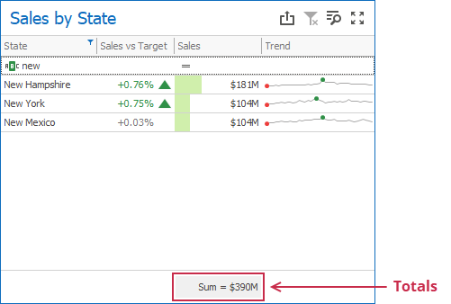

Column Filter for a WinForms Grid Item
Column filters (filter row and header filter) allow users to search data in the Grid item. These filters do not affect data outside the Grid.
Filter Row
The filter row allows a user to filter data by individual column values. To display a filter row, go to the Grid's Design Ribbon tab in the Designer and enable the Filter Row button in the Column Filter group:

When the filter row appears, a user can enter the condition in the text box to filter column values:

The filter row's cells can be of different types--text boxes for string and numeric values, calendars for dates, and so on.
Header Filter
The header filter allows users to filter values in an individual column. A user can include or exclude values from the applied filter to show the result.

The header filter is always enabled, so you cannot disable it in the UI.
Update Totals
A user can configure a Grid item to reflect changes in column values and recalculate totals based on the applied column filters.
To update totals, go to the Grid's Design Ribbon tab in the Designer and enable the Update Totals button in the Column Filter group:

As a result, the Grid item recalculates totals depending on the applied column filters:

Limitations
Filter Row Limitations
The following Grid columns do not support the filter row:
- Dimension (for Image display mode only)
- Measure (for Bar display mode only)
- Sparkline
- Delta
A Grid item does not support a filter row for window calculations and calculated fields that use the w-function if the Update Totals option is enabled.
Update Totals Limitations
You cannot enable totals recalculation in OLAP data sources.
Other Limitations
Although column filters within a Grid item are case-insensitive, totals are calculated on the server and their case-sensitivity setting depends on the database settings. If case-sensitivity settings are different, the total value can differ from the Grid's data. Make sure that the Grid item and the database use the same case-sensitivity settings.